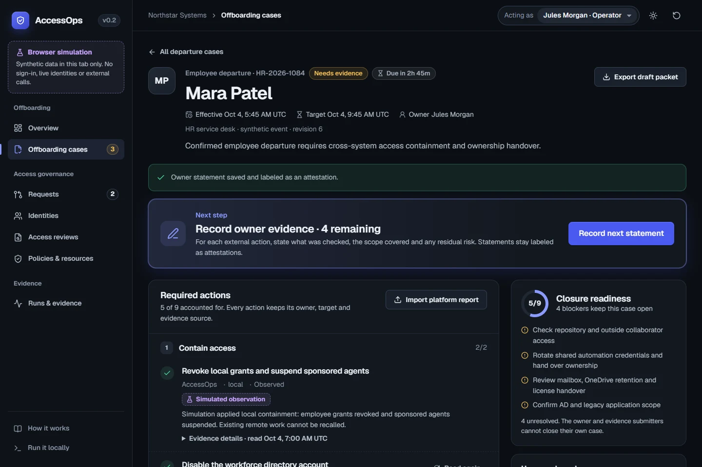

- Public demo
- Public source
- Signed release
01Identity & access management · Leaver automation
AccessOps
Disabled isn’t done.
When someone leaves, an HR event shuts off their access in Microsoft Entra ID, Keycloak and an Active Directory-compatible directory, and each system is checked to confirm the change. Anything it can’t reach stays open with an owner until someone else reviews and closes the case.
- 2.6 sfrom the HR event to the person signed out and their tokens blocked
- 6gaps found by live testing, each fixed or documented
- 20 sfor Microsoft Entra ID to confirm the change, in a test tenant
- Python
- Django
- PostgreSQL
- React
- Keycloak
- Microsoft Entra ID
- OPA